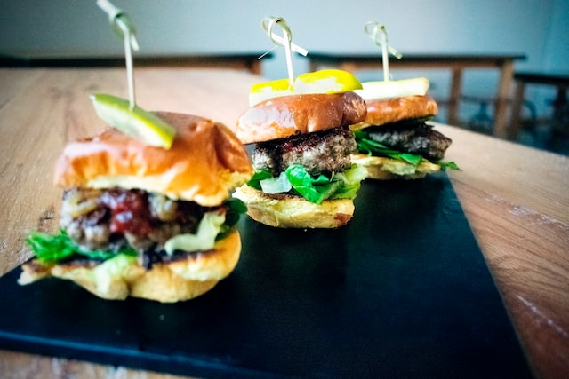

Mini Sliders

Bite-sized burgers for the win.
What's better than a fresh burger? Five. That's what. Lets not waste any more time; we both know what you're here for.
Ingredients
1 lb of ground beef
12 dinner rolls
onion soup mix
2 cups of shredded cheese
1/4 cup of mayonnaise
A lot of sliced pickles
Steps
- Preheat oven (350 degrees F).
- Mix beef and onion soup.
- Cook and stir until beef is browned. Stir in cheese and mayo.
- Put your freshly prepped beef + cheese combo on bottom portion of dinner roll.
- Put top of dinner roll on beef + cheese to make a slider
- Put them in the oven for about 30 minutes.
- Add pickles. Lots of them.
- Eat way too many sliders and induce gastrointestinal distress.
- Fin.